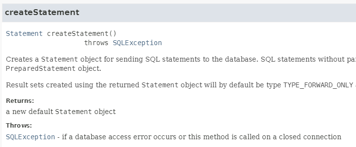
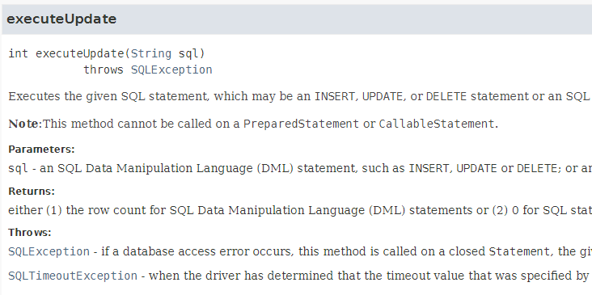
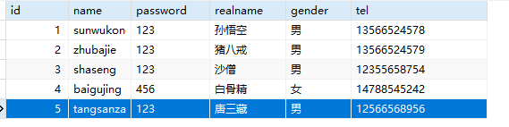

DriverManager或Class.forName(...)）Connection conn = DriverManager.getConnection(...);）Statement stmt = conn.createStatement();）stmt.executeXXXX(sql);）java.sql.ResultSet）Connection、Statement、ResultSet 等资源后，都需要显式地调用对应的 close()）下边以新增为例，展示Mysql进行JDBC的流程。
构建表
CREATE DATABASE IF NOT EXISTS jdbc
DEFAULT CHARACTER SET utf8mb4
DEFAULT COLLATE utf8mb4_0900_ai_ci;
USE jdbc;
CREATE TABLE t_user (
id INT PRIMARY KEY AUTO_INCREMENT,
name VARCHAR(50) NOT NULL,
password VARCHAR(100) NOT NULL,
realname VARCHAR(50),
gender VARCHAR(10),
tel VARCHAR(20)
);
引入maven坐标
<dependency>
<groupId>mysql</groupId>
<artifactId>mysql-connector-java</artifactId>
<version>8.0.33</version>
</dependency>
DriverManager 可以通过一个统一的接口来管理该驱动程序的所有连接操作。DriverManager的registerDriver()方法来完成驱动注册）Driver driver = new com.mysql.cj.jdbc.Driver();
DriverManager.registerDriver(driver);
其中：
* `Driver`是接口：`import java.sql.Driver;`
* `com.mysql.cj.jdbc.Driver`是mysql的实现类，这个是多态的体现；
* `oracle.jdbc.OracleDriver`是oracle的实现；
Class.forName("com.mysql.cj.jdbc.Driver");
为什么这种方式常用？第一：代码少了很多；第二：这种方式可以很方便的将com.mysql.cj.jdbc.Driver类名配置到属性文件当中。
实现原理是什么？找一下com.mysql.cj.jdbc.Driver的源码
package com.mysql.cj.jdbc;
public class Driver extends NonRegisteringDriver implements java.sql.Driver {
// Register ourselves with the DriverManager.
static {
try {
java.sql.DriverManager.registerDriver(new Driver());
} catch (SQLException E) {
throw new RuntimeException("Can't register driver!");
}
}
// .....
}
通过源码不难发现，在com.mysql.cj.jdbc.Driver类中有一个静态代码块，在这个静态代码块中调用了java.sql.DriverManager.registerDriver(new Driver());完成了驱动的注册。而Class.forName("com.mysql.cj.jdbc.Driver");代码的作用就是让com.mysql.cj.jdbc.Driver类完成加载，执行它的静态代码块。
java.sql.Connection 对象，该对象的创建标志着mysql进程和jvm进程之间的通道打开了。`getConnection(String url, String user, String password)// 2. 获取连接
String url = "jdbc:mysql://localhost:3306/jdbc";
String user = "root";
String password = "123456";
Connection conn = DriverManager.getConnection(url, user, password);
通过以上程序的输出结果得知：`com.mysql.cj.jdbc.ConnectionImpl`是`java.sql.Connection`接口的实现类，降低了耦合度。
连接数据库需要提供三个信息：**url**，**用户名**，**密码**。
getConnection(String url)，把用户名和密码放到url里边。String url = "jdbc:mysql://localhost:3306/jdbc?user=root&password=123456";
Connection conn = DriverManager.getConnection(url);
getConnection(String url, Properties info)。这种方式有两个参数，一个是url，一个是Properties对象。String url = "jdbc:mysql://localhost:3306/jdbc";
Properties info = new Properties();
info.setProperty("user", "root");
info.setProperty("password", "123456");
info.setProperty("useUnicode", "true");
info.setProperty("serverTimezone", "Asia/Shanghai");
info.setProperty("useSSL", "true");
info.setProperty("characterEncoding", "utf-8");
Connection conn = DriverManager.getConnection(url, info);
jdbc:mysql 表示要使用 MySQL 数据库，jdbc:postgresql 表示要使用 PostgreSQL 数据库。jdbc:mysql://<host>:<port>/<database_name>?<connection_parameters>
其中：
- `<host>` 是 MySQL 数据库服务器的主机名或 IP 地址；
- `<port>` 是 MySQL 服务器的端口号（默认为 3306）；
- `<database_name>` 是要连接的数据库名称；
- `<connection_parameters>` 包括连接的额外参数，例如用户名、密码、字符集等。
serverTimezone：MySQL 服务器时区，默认为 UTC，可以通过该参数来指定客户端和服务器的时区；
在 JDBC URL 中设置 serverTimezone 的作用是指定数据库服务器的时区。这个时区信息会影响 JDBC 驱动在处理日期时间相关数据类型时如何将其映射到服务器上的日期时间值。
如果不设置 serverTimezone，则 JDBC 驱动程序默认将使用本地时区，也就是客户端机器上的系统时区，来处理日期时间数据。在这种情况下，如果服务器的时区和客户端机器的时区不同，那么处理日期时间数据时可能会出现问题，从而导致数据错误或不一致。
例如，假设服务器位于美国加州，而客户端位于中国上海，如果不设置 serverTimezone 参数，在客户端执行类似下面的查询：SELECT * FROM orders WHERE order_date = '2022-11-11';
由于客户端和服务器使用了不同的时区，默认使用的是客户端本地的时区，那么实际查询的时间就是客户端本地时间对应的时间，而不是服务器的时间。这可能会导致查询结果不正确，因为服务器上的时间可能是比客户端慢或者快了多个小时。
通过在 JDBC URL 中设置 `serverTimezone` 参数，可以明确告诉 JDBC 驱动程序使用哪个时区来处理日期时间值，从而避免这种问题。在上述例子中，如果把时区设置为 `America/Los_Angeles`（即加州的时区）：
jdbc:mysql://localhost:3306/mydatabase?user=myusername&password=mypassword&serverTimezone=America/Los_Angeles
那么上面的查询就会在数据库服务器上以加州的时间来执行。
- `useSSL`：是否使用 SSL 进行连接，默认为 true；
`useSSL` 参数用于配置是否使用 SSL（Secure Sockets Layer）安全传输协议来加密 JDBC 和 MySQL 数据库服务器之间的通信。其设置为 `true` 表示使用 SSL 连接，设置为 `false` 表示不使用 SSL 连接。其区别如下：
当设置为 `true` 时，JDBC 驱动程序将使用 SSL 加密协议来保障客户端和服务器之间的通信安全。这种方式下，所有数据都会使用 SSL 加密后再传输，可以有效防止数据在传输过程中被窃听、篡改等安全问题出现。当然，也要求服务器端必须支持 SSL，否则会连接失败。
当设置为 `false` 时，JDBC 驱动程序会以明文方式传输数据，这种方式下，虽然数据传输的速度会更快，但也会存在被恶意攻击者截获和窃听数据的风险。因此，在不安全的网络环境下，或是要求数据传输安全性较高的情况下，建议使用 SSL 加密连接。
需要注意的是，使用 SSL 连接会对系统资源和性能消耗有一定的影响，特别是当连接数较多时，对 CPU 和内存压力都比较大。因此，在性能和安全之间需要权衡，根据实际应用场景合理设置 `useSSL` 参数。
- useUnicode：是否使用Unicode编码进行数据传输，默认是true启用
`useUnicode`是 JDBC 驱动程序连接数据库时的一个参数，用于告诉驱动程序在传输数据时是否使用 Unicode 编码。Unicode 是计算机科学中的一种字符编码方案，可以用于表示全球各种语言中的字符，包括 ASCII 码、中文、日文、韩文等。因此，使用 Unicode 编码可以确保数据在传输过程中能够正确、完整地呈现各种语言的字符。
具体地说，如果设置 `useUnicode=true`，JDBC 驱动程序会在传输数据时使用 Unicode 编码。这意味着，无论数据源中使用的是什么编码方案，都会先将数据转换为 Unicode 编码进行传输，确保数据能够跨平台、跨数据库正确传输。当从数据库中获取数据时，驱动程序会根据 `characterEncoding` 参数指定的字符集编码将数据转换为指定编码格式，以便应用程序正确处理数据。
需要注意的是，如果设置 `useUnicode=false`，则表示使用当前平台默认的字符集进行数据传输。这可能会导致在跨平台或跨数据库时出现字符编码不一致的问题，因此通常建议在进行数据传输时启用 Unicode 编码。
综上所述，设置 `useUnicode` 参数可以确保数据在传输过程中正确呈现各种字符集编码。对于应用程序处理多语言环境数据的场景，启用 `useUnicode` 参数尤为重要。
- `characterEncoding`：连接使用的字符编码，默认为 UTF-8；
`characterEncoding` 参数用于设置 MySQL 服务器和 JDBC 驱动程序之间进行字符集转换时使用的字符集编码。其设置为 `UTF-8` 表示使用 UTF-8 编码进行字符集转换，设置为 `GBK` 表示使用 GBK 编码进行字符集转换。其区别如下：
UTF-8 编码是一种可变长度的编码方式，可以表示世界上的所有字符，包括 ASCII、Unicode 和不间断空格等字符，是一种通用的编码方式。UTF-8 编码在国际化应用中被广泛使用，并且其使用的字节数较少，有利于提高数据传输的效率和节约存储空间。
GBK 编码是一种固定长度的编码方式，只能表示汉字和部分符号，不能表示世界上的所有字符。GBK 编码通常只用于中文环境中，因为在英文和数字等字符中会出现乱码情况。
因此，在 MySQL 中使用 `UTF-8` 编码作为字符集编码的优势在于能够支持世界上的所有字符，而且在国际化应用中使用广泛，对于不同语言和地区的用户都能够提供良好的支持。而使用 `GBK` 编码则主要在于适用于中文环境中的数据存储和传输。
需要注意的是，在选择编码方式时需要考虑到应用本身的实际需要和数据的特性，根据具体情况进行选择，避免出现字符集编码错误的问题。同时，还要确保 MySQL 服务器、JDBC 驱动程序和应用程序之间的字符集编码一致，避免出现字符集转换错误的问题。
* **注意：useUnicode和characterEncoding有什么区别？**
- **useUnicode设置的是数据在传输过程中是否使用Unicode编码方式。**
- **characterEncoding设置的是数据被传输到服务器之后，服务器采用哪一种字符集进行编码。**
例如，连接 MySQL 数据库的 JDBC URL 可以如下所示：
jdbc:mysql://localhost:3306/jdbc?useUnicode=true&serverTimezone=Asia/Shanghai&useSSL=true&characterEncoding=utf-8
这里演示的是使用本地 MySQL 数据库，使用Unicode编码进行数据传输，服务器时区为 Asia/Shanghai，启用 SSL 连接，服务器接收到数据后使用 UTF-8 编码。
数据库操作对象是这个接口：java.sql.Statement。这个对象负责将SQL语句发送给数据库服务器，服务器接收到SQL后进行编译，然后执行SQL。
API帮助文档如下：

获取数据库操作对象代码如下：
// 3. 获取数据库操作对象
Statement stmt = conn.createStatement();
System.out.println("数据库操作对象stmt = " + stmt);
执行结果如下：
数据库操作对象stmt = com.mysql.cj.jdbc.StatementImpl@302552ec
同样可以看到：java.sql.Statement接口在MySQL驱动中的实现类是：com.mysql.cj.jdbc.StatementImpl。不过我们同样是不需要关心这个具体的实现类。因为后续的代码仍然是面向Statement接口写代码的。
另外，要知道的是通过一个Connection对象是可以创建多个Statement对象的：
// 3. 获取数据库操作对象
Statement stmt = conn.createStatement();
System.out.println("数据库操作对象stmt = " + stmt);
Statement stmt2 = conn.createStatement();
System.out.println("数据库操作对象stmt2 = " + stmt2);
执行结果：
数据库操作对象stmt = com.mysql.cj.jdbc.StatementImpl@4d1c00d0
数据库操作对象stmt2 = com.mysql.cj.jdbc.StatementImpl@4b2bac3f
当获取到Statement对象后，调用这个接口中的相关方法即可执行SQL语句。
API帮助文档如下：

executeUpdate(sql)方法时，JDBC会将SQL语句发送给数据库服务器，数据库服务器对SQL语句进行编译，然后执行SQL。代码实现如下：
String sql = "insert into t_user(name,password,realname,gender,tel) values('tangsanzang','123','唐三藏','男','12566568956')"; // sql语句最后的分号';'可以不写。
int count = stmt.executeUpdate(sql);
System.out.println("插入了" + count + "条记录");
执行结果如下：
插入了1条记录
数据库表变化了：

同理，各种crud的函数如下
// 插入
String sqlInsert = "insert into t_user(name,password,realname,gender,tel) values('tangsanzang','123','唐三藏','男','12566568956')";
int countInsert = stmt.executeUpdate(sqlInsert);
System.out.println("插入了" + countInsert + "条记录");
// 更新
String sqlUpdate = "update t_user set realname = '玄奘法师' where name = 'tangsanzang'";
int countUpdate = stmt.executeUpdate(sqlUpdate);
System.out.println("更新了" + countUpdate + "条记录");
// 删除
String sqlDelete = "delete from t_user where name = 'tangsanzang'";
int countDelete = stmt.executeUpdate(sqlDelete);
System.out.println("删除了" + countDelete + "条记录");
另外对于处理查询操作需要用到另一个：executeQuery
注意，getString传入的列名，不是表中的字段名！而是查询结果中的名称！
// 查询
String sqlSelect = "select * from t_user where name = 'tangsanzang'";
ResultSet rs = stmt.executeQuery(sqlSelect);
while (rs.next()) {
String name = rs.getString("name");
String realname = rs.getString("realname");
System.out.println("name: " + name + ", realname: " + realname);
}
上边的是按照字符串类型去除，也可以按照特定的类型取出
| 类别 | 可获取的数据类型 | 主要方法 |
|---|---|---|
| 文本数据 | 字符串、字符流、大文本 | getString(), getNString(), getCharacterStream(), getClob() |
| 数值数据 | 整数、浮点数、大数字 | getInt(), getLong(), getDouble(), getBigDecimal() |
| 日期时间 | 日期、时间、时间戳 | getDate(), getTime(), getTimestamp() |
| 二进制数据 | 字节数组、二进制流、BLOB | getBytes(), getBinaryStream(), getBlob() |
| 特殊类型 | 数组、引用、行ID、SQLXML | getArray(), getRef(), getRowId(), getSQLXML() |
| 通用方法 | 任意类型（通用） | getObject() |
| 元数据 | 结果集结构信息 | getMetaData() |
第五步去哪里了？第五步是处理查询结果集，以上操作不是select语句，所以第五步直接跳过，直接先看一下第六步释放资源。【后面学习查询语句的时候，再详细看第五步】
完整的执行注册驱动、获取连接、获取数据库操作对象、执行SQL语句、释放资源
import java.sql.Driver;
import java.sql.DriverManager;
import java.sql.SQLException;
import java.sql.Connection;
import java.sql.Statement;
public class JDBCTest01 {
public static void main(String[] args){
Connection conn = null;
Statement stmt = null;
try {
// 1. 注册驱动
//Driver driver = new com.mysql.cj.jdbc.Driver(); // 创建MySQL驱动对象
//DriverManager.registerDriver(driver); // 完成驱动注册
Class.forName("com.mysql.cj.jdbc.Driver");
// 2. 获取连接
String url = "jdbc:mysql://localhost:3306/jdbc?useUnicode=true&serverTimezone=Asia/Shanghai&useSSL=true&characterEncoding=utf-8";
String user = "root";
String password = "";
conn = DriverManager.getConnection(url, user, password);
// 3. 获取数据库操作对象
stmt = conn.createStatement();
// 4. 执行SQL语句
String sql = "insert into t_user(name,password,realname,gender,tel) values('tangsanzang','123','唐三藏','男','12566568956')"; // sql语句最后的分号';'可以不写。
int count = stmt.executeUpdate(sql);
System.out.println("插入了" + count + "条记录");
} catch(SQLException e){
e.printStackTrace();
} finally {
// 6. 释放资源
if(stmt != null){
try{
stmt.close();
}catch(SQLException e){
e.printStackTrace();
}
}
if(conn != null){
try{
conn.close();
}catch(SQLException e){
e.printStackTrace();
}
}
}
}
}
从JDBC 4.0（也就是Java6）版本开始，驱动的注册不需要再手动完成，由系统自动完成。
注意：虽然大部分情况下不需要进行手动注册驱动了，但在实际的开发中有些数据库驱动程序不支持自动发现功能，仍然需要手动注册。所以建议大家还是别省略了。
import java.sql.DriverManager;
import java.sql.SQLException;
import java.sql.Connection;
import java.sql.Statement;
public class JDBCTest03 {
public static void main(String[] args){
Connection conn = null;
Statement stmt = null;
try {
// 2. 获取连接
String url = "jdbc:mysql://localhost:3306/jdbc?useUnicode=true&serverTimezone=Asia/Shanghai&useSSL=true&characterEncoding=utf-8";
String user = "root";
String password = "";
conn = DriverManager.getConnection(url, user, password);
// 3. 获取数据库操作对象
stmt = conn.createStatement();
// 4. 执行SQL语句
String sql = "insert into t_user(name,password,realname,gender,tel) values('tangsanzang','123','唐三藏','男','12566568956')"; // sql语句最后的分号';'可以不写。
int count = stmt.executeUpdate(sql);
System.out.println("插入了" + count + "条记录");
} catch(SQLException e){
e.printStackTrace();
} finally {
// 6. 释放资源
if(stmt != null){
try{
stmt.close();
}catch(SQLException e){
e.printStackTrace();
}
}
if(conn != null){
try{
conn.close();
}catch(SQLException e){
e.printStackTrace();
}
}
}
}
}
为了程序的通用性，为了切换数据库的时候不需要修改Java程序，为了符合OCP开闭原则，建议将连接数据库的信息配置到属性文件中
driver=com.mysql.cj.jdbc.Driver
url=jdbc:mysql://localhost:3306/jdbc?useUnicode=true&serverTimezone=Asia/Shanghai&useSSL=true&characterEncoding=utf-8
user=root
password=123456
然后使用IO流读取属性文件
import java.sql.DriverManager;
import java.sql.SQLException;
import java.sql.Connection;
import java.sql.Statement;
import java.util.ResourceBundle;
public class JDBCTest04 {
public static void main(String[] args){
// 通过以下代码获取属性文件中的配置信息
ResourceBundle bundle = ResourceBundle.getBundle("jdbc");
String driver = bundle.getString("driver");
String url = bundle.getString("url");
String user = bundle.getString("user");
String password = bundle.getString("password");
Connection conn = null;
Statement stmt = null;
try {
// 1. 注册驱动
Class.forName(driver);
// 2. 获取连接
conn = DriverManager.getConnection(url, user, password);
// 3. 获取数据库操作对象
stmt = conn.createStatement();
// 4. 执行SQL语句
String sql = "insert into t_user(name,password,realname,gender,tel) values('tangsanzang','123','唐三藏','男','12566568956')"; // sql语句最后的分号';'可以不写。
int count = stmt.executeUpdate(sql);
System.out.println("插入了" + count + "条记录");
} catch(SQLException | ClassNotFoundException e){
e.printStackTrace();
} finally {
// 6. 释放资源
if(stmt != null){
try{
stmt.close();
}catch(SQLException e){
e.printStackTrace();
}
}
if(conn != null){
try{
conn.close();
}catch(SQLException e){
e.printStackTrace();
}
}
}
}
}
以后要连接其他数据库，只要修改属性文件中的配置即可。